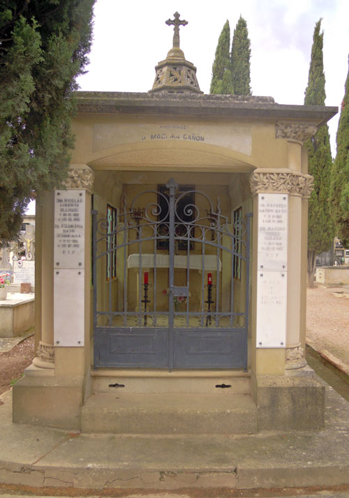
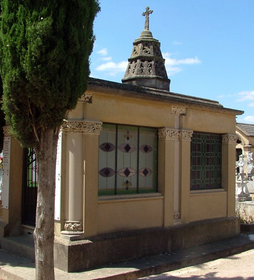
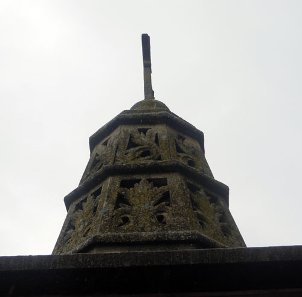
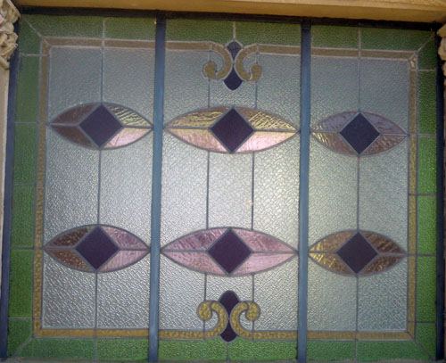
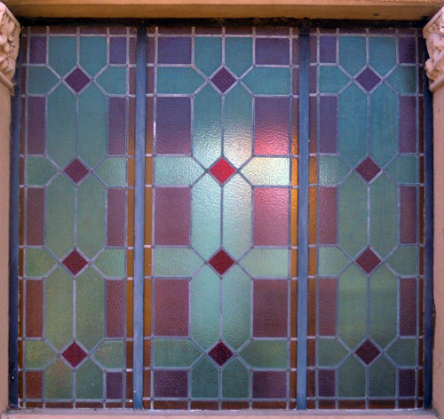
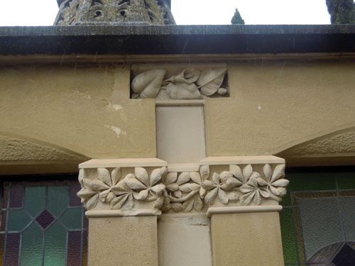
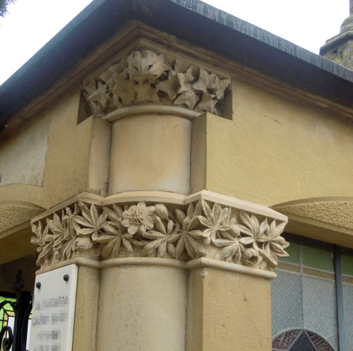
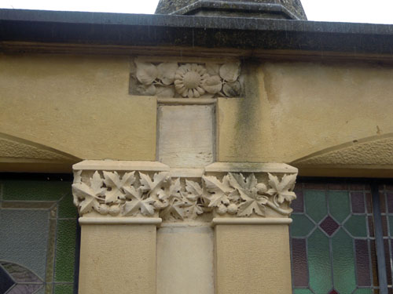

El panteón de Macaria Cañón está situado en la calle de San Miguel y zona de Santa Clara. Esta propiedad, la número 119 del cementerio, fue adquirida el 25 de octubre de 1940 a Concepción Bastida, su anterior poseedora y las obras de construcción estaban terminadas en octubre de 1941[1]. Macaria Cañón Baún, modista según el padrón municipal de 1907, era natural de Torrijo de la Cañada (Zaragoza) y estuvo casada con el hojalatero calagurritano Nicolás Llorente Olloqui[2].

El panteón tiene forma de pequeña iglesia de planta rectangular de dos tramos, cubierta con una techumbre plana de la que emerge una aguja octogonal. La construcción, de muros lisos, se alza sobre un pequeño zócalo de piedra oscura. La fachada principal presenta un gran vano adintelado de acceso con falso arco de descarga superior, sobre el que puede leerse “Propiedad Da. Macaria Cañon”. El dintel apea sobre pilares de fuste liso rematados en capiteles vegetales, con campanillas en el lado derecho y pasionarias en el izquierdo. Tras los pilares, en los extremos de la fachada, se han colocado sendas columnas de basa y capitel vegetal que soportan directamente la cornisa superior. Las basas reproducen hojas de roble en el lado izquierdo y de laurel en el derecho; los capiteles, hiedra y campanillas respectivamente. El acceso al interior cierra con reja-puerta de doble batiente de forma curva y con decoración geométrica, rematada con grandes volutas y flameros a los lados de una cruz. El panteón está cubierto con una techumbre plana de la que emerge una aguja octogonal, de dos cuerpos decrecientes con hojas de acanto en los dos registros. El remate tiene forma acampanada y está coronado con una cruz de brazos cóncavos.

Los muros laterales muestran una estructura muy similar, a base de parejas de pilares que soportan vanos de iluminación con falso arco de descarga superior. Los capiteles son vegetales, representando plátano o arce y cardo en el lateral izquierdo, castaño de indias y flor de adormidera en el derecho. En el centro de cada lado y entre las pilastras se advierten pequeñas retropilastras que soportan la cornisa, también con basas y capiteles vegetales: florecillas y geranio en las basas y cala y girasol en los capiteles, en los lados derecho e izquierdo respectivamente. Tanto estas retropilastras como las columnas que flanquean la fachada principal destacan cromáticamente ya que para ellas se ha empleado una piedra caliza banquecina que contrasta con el tono dorado-rojizo de la construcción. La fachada posterior es lisa y maciza, animada tan sólo en los extremos por el capitel vegetal, angular, de las pilastras. Cada lado presenta dos vanos de iluminación cerrados con vidrieras emplomadas, todas de textura granulada e iguales dos a dos, siempre con decoración geométrica. Estas vidrieras son similares a algunas que todavía pueden verse en el Ayuntamiento, realizadas por la empresa zaragozana La Veneciana hacia 1944.

Se accede al interior del panteón a través de dos pequeñas gradas de piedra, la superior con respiradero para la cripta inferior. El pavimento es de linóleo imitando baldosas salvo una losa con argollas en la zona de los pies, que permite el acceso a la zona subterránea. Al interior los muros son lisos y desornamentados y la cubierta, plana; el hueco de la aguja superior aparece cerrado con un octógono de madera. El altar se ha realizado con grupos de cuatro columnas adosadas a un pilar central, a modo de pilares fasciculados góticos, sobre podio cúbico y guirnaldas de laurel en el capitel. El tablero horizontal es moldurado. A modo de retablo se ha colocado una copia del Cristo de Dalí entre lámparas metálicas.
Este panteón resulta excepcional por su cronología avanzada. Su estructura es tradicional y sin duda está inspirada en los templos in antis de origen clásico. La aguja tiene evocaciones góticas aunque carece de la esbeltez que suele caracterizar este tipo de obras. Sin embargo, lo más significativo de este sepulcro es su decoración vegetal, plástica, naturalista y carnosa, que ha representado especies tradicionales como pensamientos, lirios, cardo, flor de adormidera, campanilla, hiedra, laurel, encina y castaño de indias y las enriquece con nuevas incorporaciones, como la cala, el girasol o el geranio, que ya carecen de significado funerario, lo que evidencia su cronología.

[1] El 10 de octubre de 1941 se autoriza el traslado de los restos de Nicolás Llorente Olloqui y Filomena Baún Iturriaga al panteón de 2ª clase de Macaria Cañón Baún en la zona de Santa Clara, calle san Miguel, por lo que ya debía estar terminado. AMC. Libro de Actas Municipales. Del 8 de mayo de 1940 al 22 de agosto de 1941. Sig. 150/1. Fols. 66v y 71. Libro de Actas municipales. Del 29 de agosto de 1941 al 29 de enero de 1943. Sig. 150/2, fol. 11.
[2] AMC. Cod. 2.1.4.13. Sig. 442/3 (padrón de 1901), s/f. Calle San Andrés nº 29. Sig. 443/1 (padrón de 1907), fol. 38 (Calle Mayor nº 15). Sig. 444/2 (padrón de 1924-1925), fol. 77 (Cuesta del Río nº 1).